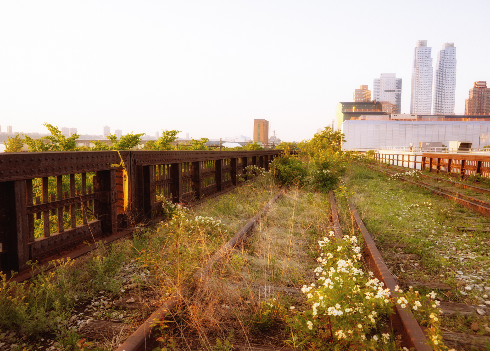

High Line
The High Line (also known as the High Line Park) is a 1.45-mile-long (2.33 km) New York City linear park built on a section of a disused New York Central Railroad spur called the West Side Line. Inspired by the 3-mile (4.8-kilometer) Promenade plantée, a similar project in Paris completed in 1993, the High Line has been redesigned and planted as an aerial greenway and rails-to-trails park.
The High Line Park uses the disused southern portion of the West Side Line running to the Lower West Side of Manhattan. It runs from Gansevoort Street – three blocks below 14th Street – in the Meatpacking District, through Chelsea, to the northern edge of the West Side Yard on 34th Street near the Javits Convention Center. An unopened spur extends above 30th Street to Tenth Avenue. Formerly, the High Line went as far south as a railroad terminal to Spring Street just north of Canal Street. However, most of the lower section was demolished in 1960, with another small portion of the lower section being demolished in 1991.
Repurposing of the railway into an urban park began construction in 2006, with the first phase opening in 2009[9] and the second phase opening in 2011. The third and final phase officially opened to the public on September 21, 2014. A short stub above Tenth Avenue and 30th Street, is still closed as of September 2014, but will open by 2015. The project has spurred real estate development in the neighborhoods that lie along the line. As of September 2014, the park gets nearly 5 million visitors annually.
Sub head here
The park extends from Gansevoort Street to 34th Street. At 30th Street, the elevated tracks turn west around the Hudson Yards Redevelopment Project to the Jacob K. Javits Convention Center on 34th Street,though the northern section is expected to be integrated within the Hudson Yards development and the Hudson Park and Boulevard. When the Hudson Yards Redevelopment Project’s Western Rail Yard is finished in 2018, it will be elevated above the High Line Park, so an exit along the viaduct will be located over the West Side Yard, exiting out to the Western Rail Yard of Hudson Yards.The 34th Street entrance is at grade level, with wheelchair access.
The park is open daily from 7am to 7pm in the winter, 10pm in the spring and fall, and 11pm in the summer, except for the Interim Walkway west of 11th Avenue, which is open until dusk. It can be reached through eleven entrances, six of which are accessible to people with disabilities. The wheelchair-accessible entrances, each with stairs and an elevator, are at Gansevoort, 14th, 16th, 23rd, and 30th Streets. Additional staircase-only entrances are located at 18th, 20th, 26th, and 28th Streets, and 11th Avenue. Street level access is available at 34th Street via an “Interim Walkway” between 30th Street/11th Avenue and 34th Street.
Route
At the Gansevoort Street end, which runs north-south, the stub end over Gansevoort Street is named the Tiffany and Co. Foundation Overlook, dedicated in July 2012; the foundation was a major backer of the park. Then, it passes under The Standard hotel, and through a passage at 14th Street.At 14th Street, the High Line is split into two sides of different elevation;the Diller-Von Furstenberg Water Feature, opened in 2010, is featured on the lower side, and a sundeck on the upper side.
Then, the High Line passes under the Chelsea Market, a food hall, at 15th Street. A spur connecting the viaduct to the National Biscuit Company building splits off at 16th Street; this spur is closed to the public. The Tenth Avenue Square, an amphitheater located on the viaduct, is at 17th Street, where the High Line cross over Tenth Avenue from southeast to northwest. At 23rd Street, there is the 23rd Street Lawn, a lawn where visitors can rest. Then, at 25th-26th Streets, a ramp takes visitors above the viaduct, with a scenic overlook facing east at 26th Street. The Philip A. and Lisa Maria Falcone Flyover, as it is called, is named after two major donors to the park; this ramp was based on plans for a Phase 1 flyover that was never built.
The park then curves west to Phase 3 and merges into the Tenth Avenue Spur, the latter of which stretches over 30th Street to Tenth Avenue and will open in 2015. On Phase 3, there is another ramp taking visitors above the viaduct at 11th Avenue, as well as a play area consisting of rail ties and beams coming out of the structure called the “Pershing Beams”, a gathering space with multiple benches, and a set of three trackways where one could walk between the railway tracks. There are also seesaw-like benches, as well as benches that, much like a xylophone, contain parts that make sounds when tapped. An “interim walkway” between 11th Avenue/30th Street and 34th Street divides the viaduct into two sides – a gravel walkway and an unrenovated section still with rail tracks; this walkway is only temporary open, and will close for renovation once the Tenth Avenue spur is completed. The High Line turns north to a point just east of Twelfth Avenue. At 34th Street, it curves east, and the park ends at a wheelchair ramp midway between 12th and 11th Avenues.
History Introduction
In 1847, the City of New York authorized street-level railroad tracks down Manhattan’s West Side to ship freight. For safety, the railroads hired men called the “West Side Cowboys” to ride horses and wave flags in front of the trains.However, so many accidents occurred between freight trains and other traffic that Tenth Avenue became known as “Death Avenue”. After years of public debate about the hazard, in 1929 the city and the state of New York and the New York Central Railroad agreed on the West Side Improvement Project, a large project conceived by Robert Moses that also included the construction of the West Side Elevated Highway. The 13-mile (21 km) project eliminated 105 street-level railroad crossings and added 32 acres (13 ha) to Riverside Park. It cost over US$150,000,000 (about US$2,060,174,000 today).
The High Line viaduct, then a portion of the New York Connecting Railroad’s West Side Line, opened to trains in 1934. It originally ran from 34th Street to St. John’s Park Terminal at Spring Street, and was designed to go through the center of blocks rather than over the avenue. It connected directly to factories and warehouses, allowing trains to load and unload their cargo inside buildings. Milk, meat, produce, and raw and manufactured goods could be transported and unloaded without disturbing traffic on the streets. This also reduced the load for the Bell Laboratories Building (which has been housing the Westbeth Artists Community since 1970), as well as for the former Nabisco plant in the Chelsea Market building, which were served from protected sidings within the structures.
The train also passed underneath the Western Electric complex at Washington Street. This section still exists as of May 18, 2008 and is not connected with the rest of the developed park.
Subhead here
The growth of interstate trucking in the 1950s led to a drop in rail traffic throughout the nation, so that by 1960, the southernmost section of the line was demolished. This section started at Gansevoort Street and ran down Washington Street as far as Spring Street just north of Canal Street,[45] representing almost half of the line. The last train on the remaining part of the line was operated by Conrail in 1980.
In the mid-1980s, a group of property owners with land under the line lobbied for the demolition of the entire structure. Peter Obletz, a Chelsea resident, activist, and railroad enthusiast, challenged the demolition efforts in court and tried to re-establish rail service on the line. During the late 1980s, the north end of the High Line was disconnected from the rest of the national railroad system, due to the construction of the Empire Connection to Penn Station, which opened in spring 1991. The tracks were rerouted to the new Empire Connection tunnel built underground to Penn Station, because it was expected that the High Line would be demolished. A small section of the High Line in the West Village, from Bank to Gansevoort Streets, was actually taken apart in 1991, despite objections by people who wanted to keep the High Line.
In the 1990s, as the line lay unused and in disrepair (despite the fact that the riveted steel elevated structure was structurally sound) it became known to a few urban explorers and local residents for the tough, drought-tolerant wild grasses, shrubs, and rugged trees such as sumac that had sprung up in the gravel along the abandoned railway. It was slated for demolition under the administration of then-mayor Rudy Giuliani.
Repurposing
In 1999, the non-profit Friends of the High Line[38] was formed by Joshua David and Robert Hammond, residents of the neighborhood that the lne ran through. They advocated for the line’s preservation and reuse as public open space, so that it would become an elevated park or greenway, similar to the Promenade Plantée in Paris. CSX Transportation, which owned the High Line, had given photographer Joel Sternfeld permission to photograph the line for a year. These photos of the natural beauty of the meadow-like wildscape of the railway, discussed in an episode of the documentary series Great Museums, were used at public meetings whenever the subject of saving the High Line was discussed. Diane von Furstenberg, who had moved her New York City headquarters to the Meatpacking District in 1997, organized fund-raising events for the campaign in her studio, along with her husband, Barry Diller. Broadened community support of public redevelopment of the High Line for pedestrian use grew, and in 2004, the New York City government committed $50 million to establish the proposed park. New York Mayor Michael Bloomberg and City Council Speakers Gifford Miller and Christine C. Quinn were important supporters. In total, funders of the High Line Park raised over $150 million (equivalent to $164,891,000 in 2014).
On June 13, 2005, the U.S. Federal Surface Transportation Board issued a certificate of interim trail use, allowing the City to remove most of the line from the national railway system. On April 10, 2006, Mayor Bloomberg presided over a ceremony that marked the beginning of construction. The park was designed by the James Corner’s New York-based landscape architecture firm Field Operations and architects Diller Scofidio + Renfro, with planting design from Piet Oudolf of the Netherlands, lighting design from L’Observatoire International, and engineering design by Buro Happold. Major backers included Philip Falcone, Diane von Furstenberg, Barry Diller, and von Furstenburg’s children, Alexander von Fürstenberg and Tatiana von Fürstenberg. Hotel developer Andre Balazs, owner of the Chateau Marmont in Los Angeles, built the 337-room Standard Hotel, straddling the High Line at West 13th Street.
The southernmost section, from Gansevoort Street to 20th Street, opened as a city park on June 8, 2009. This southern section includes five stairways and elevators at 14th Street and 16th Street. Around the same time, construction for the second section began.
On June 7, 2011, a ribbon was cut to open the second section from 20th Street to 30th Street, with Mayor Michael Bloomberg, New York City Council Speaker Christine Quinn, Manhattan Borough President Scott Stringer, and Congressman Jerrold Nadler in attendance.
In 2011, CSX Transportation, the then-owner of the northernmost section, from 30th to 34th Streets, agreed in principle to donate the section to the city, while the Related Companies, which own the development rights to the West Side Rail Yards, agreed not to tear down the spur that crosses 10th Avenue. Construction on the final section was started in September 2012.
On September 20, 2014, a ribbon-cutting ceremony for the High Line was held, followed by the opening of the third section of the High Line Park on September 21, and a procession down the High Line. The third phase, costing US$76 million, is divided into two parts. The first part, costing US$75 million, which opened on September 21, is from the end of the existing Phase 2 of the High Line to the line’s terminus at 34th Street west of 11th Avenue. The second part, the spur, will contain such amenities as a bowl-shaped theater (the theater will not be completed until a few years after the High Line Park is completely opened). It will also be integrated with 10 Hudson Yards, which has already been built over the High Line Spur as of December 2013; he spur will not open until July 2015, when 10 Hudson Yards is completed.
Impact
The recycling of the railway into an urban park has bought on the revitalization of Chelsea, which had been “gritty” and in generally poor condition in the late 20th century. It has also spurred real estate development in the neighborhoods that lie along the line. Mayor Bloomberg noted that the High Line project has helped usher in something of a renaissance in the neighborhood: by 2009, more than 30 projects were planned or under construction nearby. Residents who have bought apartments next to the High Line Park have adapted to its presence in varying ways, but most responses are positive; some, however, claim that the park became a “tourist-clogged catwalk” since it opened. However, the real estate boom has not been victimless; many well-established businesses in west Chelsea have closed due to loss of neighborhood customer base or rent increases.
Crime has been extraordinarily low in the park. Shortly after the second section opened in 2011, The New York Times reported that there have been no reports of major crimes such as assaults or robberies since its first phase opened two years prior. Parks Enforcement Patrols have written summonses for various infractions of park rules, such as walking dogs or bicycles on the walkway, but at a rate lower than in Central Park. Park advocates attributed that to the high visibility of the High Line from the surrounding buildings, a feature of traditional urbanism espoused by author Jane Jacobs nearly 50 years earlier. Joshua David, a co-founder of Friends of the High Line, stated:
- Empty parks are dangerous ... Busy parks are much less so. You’re virtually never alone on the High Line.
- A New Yorker columnist was of the opinion, when reviewing the new “Highliner” diner for the High Line, that “the new Chelsea that is emerging on weekends as visitors flood the elevated park ... [is] touristy, overpriced, and shiny.”
The success of the High Line in New York City has encouraged the leaders of other cities, such as Mayor Rahm Emanuel of Chicago, who see it as “a symbol and catalyst” for gentrifying neighborhoods. Several cities also have plans to renovate some railroad infrastructure into park land, including Philadelphia and St. Louis. In Chicago, where the Bloomingdale Trail, a 2.7 miles (4.3 km)-long linear park on former railroad infrastructure, will run through several neighborhoods. One estimate is that it costs substantially less to redevelop an abandoned urban rail line into a linear park than to demolish it. James Corner, one of the Bloomingdale Trail’s designers, said, “The High Line is not easily replicable in other cities,” observing that building a “cool park” requires a “framework” of neighborhoods around it in order to succeed. In Queens, the Queensway, a proposed aerial rail trail, is being considered for reactivation along the right-of-way of the former LIRR Rockaway Beach Branch. Other cities around the world are planning elevated rails-to-trails parks; this was referred to in one source as the “High Line” effect. Due to the popularity of the High Line, there have been several proposals for museums along its path. The Dia Art Foundation considered but rejected a proposal to build a museum at the Gansevoort Street terminus. On that site, the Whitney Museum is currently constructing a new home for its collection of American art. The building was designed by Renzo Piano and will open in 2015.